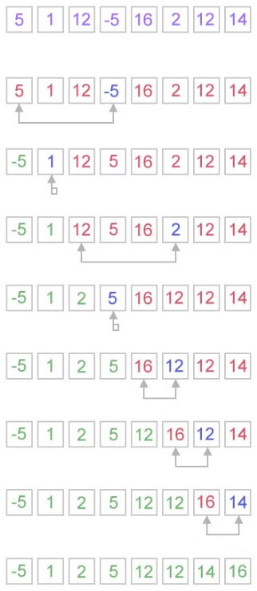
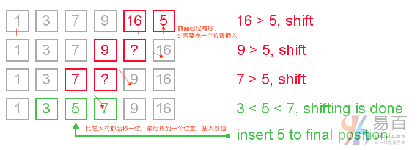

☰ 目录
18 java 基础实例程序
Java基础实例程序在面试中经常提到。这些程序可以从控制语句，数组，字符串，面向对象等等。让我们来看看下面java实例程序的列表。
1. 斐波纳契数列
编写一个java程序打印斐波纳契(fibonacci)数列不使用递归和使用递归。示例链接：斐波纳契数列代码实现
输入: 10
输出: 0 1 1 2 3 5 8 13 21 34
非递归：
class FibonacciExample1 {
public static void main(String args[]) {
int n1 = 0, n2 = 1, n3, i, count = 10;
System.out.print(n1 + " " + n2);// printing 0 and 1
for (i = 2; i < count; ++i)// loop starts from 2 because 0 and 1 are
// already printed
{
n3 = n1 + n2;
System.out.print(" " + n3);
n1 = n2;
n2 = n3;
}
}
}
.......
执行上面代码，得到如下结果 -
0 1 1 2 3 5 8 13 21 34
递归实现：
class FibonacciExample2 {
static int n1 = 0, n2 = 1, n3 = 0;
static void printFibonacci(int count) {
if (count > 0) {
n3 = n1 + n2;
n1 = n2;
n2 = n3;
System.out.print(" " + n3);
printFibonacci(count - 1);
}
}
public static void main(String args[]) {
int count = 10;
System.out.print(n1 + " " + n2);// printing 0 and 1
printFibonacci(count - 2);// n-2 because 2 numbers are already printed
}
}
Java
执行上面代码，得到如下结果 -
0 1 1 2 3 5 8 13 21 34
2. 素数实例
编写一个java程序来判定给定的一个数字是否为素数。示例链接：素数实例代码
输入: 44
输出: not prime number
输入: 7
输出: prime number
质数(prime number)又称素数，有无限个。质数定义是：在大于1的自然数中，除了1和它本身以外不再有其他因数的数称为质数。例如，2，3，5，7，11，13，17 ….是素数。
注意：0和1不是素数。 2是唯一的偶数素数，因为所有其他偶数可以除以2。
下面来看看java中的素数程序。 在这个java程序中，我们将读取一个数字变量，并判断这个数字是否为素数。
class PrimeExample {
public static void main(String args[]) {
int i, m = 0, flag = 0;
int n = 17;// it is the number to be checked
m = n / 2; // Math.sqrt(n)
for (i = 2; i <= m; i++) {
if (n % i == 0) {
System.out.println("Number is not prime");
flag = 1;
break;
}
}
if (flag == 0)
System.out.println(n + " is prime");
}
}
执行上面代码，得到以下结果 -
17 is prime
3. 回文数
编写一个java程序断定给定的字符串是否为一个回文数。示例链接：回文数示例
输入： 123
输出： not palindrome number
输入： 12321
输出： palindrome number
Java中的回文数定义：回文数是反向后与原数字也是相同的数字(即：从左边读和从右边读过来都是同一个数字)。 例如，545,151,3454,343,171,4884都是回文数。
实现回文数算法
- 获取要检查回文的数字
- 将数字保存在临时变量中
- 反转数字
- 将临时数字与反转数字进行比较
- 如果两个数字相同，则打印“回文数”
- 否则打印“不回文数”
下面来看看java的回文程序。 在这个java程序中，首先得到一个数字变量，并检查数是否是回文。
class PalindromeExample {
public static void main(String args[]) {
int r, sum = 0, temp;
int n = 454;// It is the number variable to be checked for palindrome
temp = n;
while (n > 0) {
r = n % 10; // getting remainder
sum = (sum * 10) + r;
n = n / 10;
}
if (temp == sum)
System.out.println("palindrome number ");
else
System.out.println("not palindrome");
}
}
这种复杂度有点高
找规律
4884
4884/1000 ?= 4884 % 10
(4884 - 1000*(4884/1000)) /100 ? = (4884/10) % 10
这样比较麻烦，转成字符串就好弄了。
改进后的方案如下：
public class Main {
public static void main(String... args) {
int data = 4884;
String d = String.valueOf(data);
System.out.println(d.length());
boolean flag = true;
for( int i =0; i < d.length()/2; i++ ){
if( d.charAt(i) != d.charAt(d.length()-1 -i) ){
System.out.println("not huiwen");
flag = false;
break;
}
}
if( flag )
System.out.println("is huiwen");
}
};
4. 阶乘
编写一个java程序来打印数字的阶乘。示例链接：阶乘实现代码
输入： 5
输出： 120
输入： 6
输出： 720
public class Main {
public static void main(String... args) {
int a = 5;
int res = 1;
for( int i =1; i<=a; i++)
res *= i; /// 神奇的错误， * = 中间空一格居然有错误
System.out.println(res);
}
};
5. 阿姆斯壮数
编写一个java程序来断定一个数值是否为阿姆斯壮(Armstrong)数。示例链接：阿姆斯壮数实例
输入： 153
输出： Armstrong number
输入： 22
输出： not Armstrong number
Java中的阿姆斯壮数(armstrongnumber) 定义：阿姆斯壮数(armstrongnumber) 是等于其数字的立方数之和的数字，例如：0，1，153，370，371，407等。
现在试着理解为什么153是一个阿姆斯壮数字， 153 = (1*1*1)+(5*5*5)+(3*3*3)。
也就是:
153 = (1*1*1)+(5*5*5)+(3*3*3)
(1*1*1)=1
(5*5*5)=125
(3*3*3)=27
So:
1+125+27=153
Java
再来试着理解为什么371也是一个阿姆斯壮数字。
371 = (3*3*3)+(7*7*7)+(1*1*1)
where:
(3*3*3)=27
(7*7*7)=343
(1*1*1)=1
So:
27+343+1=371
Java
下面来看看如何使用Java来实现检查阿姆斯壮(Armstrong)数字。
class ArmstrongExample {
public static void main(String[] args) {
int c = 0, a, temp;
int n = 153;// It is the number to check armstrong
temp = n;
while (n > 0) {
a = n % 10; /// 每次取最低数，这种方法还是可取的
n = n / 10;
c = c + (a * a * a);
}
if (temp == c)
System.out.println("armstrong number");
else
System.out.println("Not armstrong number");
}
}
结果如下：
armstrong number
6. 气泡排序
编写一个java程序，使用冒泡排序算法对数组元素进行排序。示例链接：气泡排序实例
输入： 18 9 33 4 84 32
输出： 4 9 18 32 33 84
在教程中，将创建一个java程序，使用冒泡排序对数组元素排序。 气泡排序算法也被称为最简单的排序算法。
在冒泡排序算法中，数组从第一个元素遍历到最后一个元素。 这里，将当前元素与下一个元素进行比较。如果当前元素大于下一个元素，则交换它们的位置。
public class BubbleSortExample {
static void bubbleSort(int[] arr) {
int n = arr.length;
int temp = 0;
for (int i = 0; i < n; i++) {
/// 这里，应该是 n - i, 呈阶梯状上升
for (int j = 1; j < (n - i); j++) {
if (arr[j - 1] > arr[j]) {
// swap elements
temp = arr[j - 1];
arr[j - 1] = arr[j];
arr[j] = temp;
}
}
}
}
public static void main(String[] args) {
int arr[] = { 3, 60, 35, 2, 45, 320, 5 };
System.out.println("Array Before Bubble Sort");
for (int i = 0; i < arr.length; i++) {
System.out.print(arr[i] + " ");
}
System.out.println();
bubbleSort(arr);// sorting array elements using bubble sort
System.out.println("Array After Bubble Sort");
for (int i = 0; i < arr.length; i++) {
System.out.print(arr[i] + " ");
}
}
}
执行上面的代码，得到以下结果 -
Array Before Bubble Sort
3 60 35 2 45 320 5
Array After Bubble Sort
2 3 5 35 45 60 320
7. 选择排序
编写一个java程序，使用选择排序算法对数组元素进行排序。示例链接：选择排序实例
输入： 18 9 33 4 84 32
输出： 4 9 18 32 33 84
在这个示例中，我们创建一个java程序，实现使用选择排序对数组元素进行排序。 在选择排序算法中，搜索最低的元素并将其排列到适当的位置。用下一个最小的数字交换当前元素。

选择排序的Java实现代码示例如下 -
public class SelectionSortExample {
public static void selectionSort(int[] arr) {
for (int i = 0; i < arr.length - 1; i++) {
int index = i;
for (int j = i + 1; j < arr.length; j++) {
if (arr[j] < arr[index]) {
index = j;// searching for lowest index
}
}
/// swap current and index
int smallerNumber = arr[index];
arr[index] = arr[i];
arr[i] = smallerNumber;
}
}
public static void main(String a[]) {
int[] arr1 = { 9, 14, 3, 2, 43, 11, 58, 22 };
System.out.println("Before Selection Sort");
for (int i : arr1) {
System.out.print(i + " ");
}
System.out.println();
selectionSort(arr1);// sorting array using selection sort
System.out.println("After Selection Sort");
for (int i : arr1) {
System.out.print(i + " ");
}
}
}
执行上面代码后，得到以下结果 -
Before Selection Sort
9 14 3 2 43 11 58 22
After Selection Sort
2 3 9 11 14 22 43 58
8. 插入排序
编写一个java程序，使用插入排序算法对数组元素进行排序。示例链接：插入排序实例
下面我们创建一个java程序，实现使用插入排序对数组元素进行排序。 插入排序对于小元素是有好处的，因为排序大量元素它需要更多的时间。

让我们来看看一个简单的java程序，使用插入排序算法对数组进行排序。
public class InsertionSortExample {
public static void insertionSort(int array[]) {
int n = array.length;
/// 从前到后
for (int j = 1; j < n; j++) {
int key = array[j];
int i = j - 1;
while ((i > -1) && (array[i] > key)) {
array[i + 1] = array[i];
i--;
}
/// 知道 key 前面的数值都比 key 小
array[i + 1] = key;
}
}
public static void main(String a[]) {
int[] arr1 = { 9, 14, 3, 2, 43, 11, 58, 22 };
System.out.println("Before Insertion Sort");
for (int i : arr1) {
System.out.print(i + " ");
}
System.out.println();
insertionSort(arr1);// sorting array using insertion sort
System.out.println("After Insertion Sort");
for (int i : arr1) {
System.out.print(i + " ");
}
}
}
执行上面代码，输出结果如下：
Before Insertion Sort
9 14 3 2 43 11 58 22
After Insertion Sort
2 3 9 11 14 22 43 58